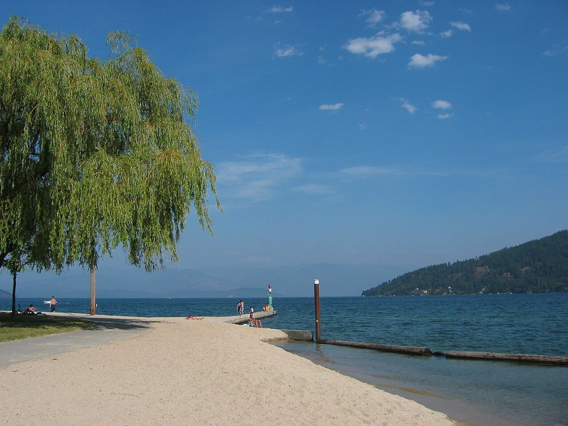

Ponderay · Hotel
Hotel Ruby Sandpoint
A modern hotel near the lake, a few minutes from town.
Official details for Hotel Ruby SandpointA big lake and a mountain above town.
Sandpoint is a laid-back mountain town on the shore of Lake Pend Oreille, Idaho’s largest and deepest lake, with Schweitzer Mountain rising above. Land at Sandpoint Airport near downtown, swim and paddle at City Beach, ride the Schweitzer chairlift for lake views, catch an outdoor concert at the Festival at Sandpoint in August, and stop for a pint at Matchwood Brewing.

Time illustration: direct distance at 150 KTAS plus 15 minutes for departure and arrival, matching the discovery page. Use ForeFlight for your actual flight plan.
KSZT, Sandpoint Airport, is a non-towered city airport at 2,131 feet with a 5,501-foot runway, a few minutes from downtown.
Sandpoint Airport, Sandpoint, ID
Mountains surround the lake; watch for valley fog in fall and winter. No live fuel price is shown.
Mountain flying: high density altitude on summer afternoons, mountain wave and strong winds over the ridges, afternoon thunderstorms from July to September, wildfire smoke in late summer, and winter snow and icing. Consider a mountain-flying course before you go. About 1890 nm from Myrtle Beach: two long days each way with several fuel stops. Plan a week, or overnight on the way out and back.
Rates and availability need travel dates.
A modern hotel near the lake, a few minutes from town.
Official details for Hotel Ruby SandpointSlopeside rooms at Schweitzer Mountain.
Schweitzer for Schweitzer lodgingLake rentals and inns.
Visit Sandpoint for More places to stayReserve weekend dinners.
Local beer and pub food downtown.
Official details for Matchwood BrewingRestaurants in Sandpoint.
Visit Sandpoint for More restaurantsAugust is the liveliest month.
This prototype links to the local visitor site. It does not yet match events to your travel dates.
Outdoor concerts by the lake.
Festival at Sandpoint for Festival at SandpointBeaches and boating.
Visit Sandpoint for Lake seasonSchweitzer.
Schweitzer for Ski seasonCheck the local calendar when choosing a weekend, and confirm dates and tickets with the organizer.
A sample Sandpoint weekend. This is a two-day flight each way; plan a week. No bookings or availability confirmed.
Land at KSZT mid-morning.
Lunch in town.
A short walk, then back to the airport.
Land at KSZT, subject to weather, density altitude and your actual flight plan.
City Beach and downtown.
Dinner at Matchwood.
Schweitzer chairlift and a hike.
Paddle the lake.
A Festival concert (August).
Coffee downtown.
Compute takeoff performance and allow time at the FBO.
Mountain afternoons bring wind, turbulence and storms; leave early.
The main sight.
Explore.
Dinner in town.
These details make the difference between an appealing list and a usable getaway.
Lodging and festival tickets.
About 1,890 nm from Myrtle Beach: two long days each way.
Valley fog is common in fall mornings.
June to September.
Research-based selections, not personal-visit endorsements. Researched November 1, 2026. Confirm hours, prices and availability directly with each place before booking. Spotted something out of date, or have a favorite we missed? Email us at hello@wingawayweekends.com.
WingAway Weekends helps you discover the destination. Use ForeFlight and current official aviation information for route, performance, weather, NOTAMs and preflight decisions. Flight planning and PIC responsibility stay with the pilot.